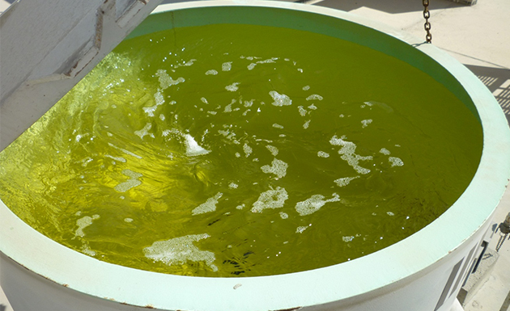

Session 5.1
Appearance & Colour
- 5.1.1 Visual Appearance Check Control Check
- Chemical Water Detection
- 5.1.2Fast Flush
- Water contamination can be seen by looking at the aviation fuel sample in a white or stainless steel bucket
- Swirl the sample and let settle for several minutes
- Free water will tend to settle to the bottom of the bucket
- Dissolved water may make the fuel appear hazy or cloudy
- In ALL In all specifications, the first clause states that the product must be:
- “Clear, bright, and visually free from solid matter and dissolved water at normal ambient temperature.”
- Delivered fuel must be clean, bright and not contaminated with free water
- “Clear” is a visual condition of fuel without cloud, emulsion, visible particulate matter or entrained water.
- “Bright” is the quality of fuel that refers to the shiny and sparkling appearance of clean and dry fuel.
- The “bright and clear” condition of the fuel is not dependent on the natural colour of the fuel.
- The “Clear and Bright” test is a visual check conducted to detect water or other solid contaminants in the fuel
- Any evidence of external contaminants renders the fuel “not suitable for use” and points to a requirement for further laboratory analysis.
- Correct colour and be visually clear, bright and free from solid matter and undissolved water at normal ambient temperature
- The terms “clear” and “bright” are not related to the natural color of the fuel:
- “Clear” means the absence of any cloud, emulsion, readily visible sediment or entrained or free water.
- “Bright” refers to the sparkling appearance of clean, dry fuels having no cloud or haze.
- SWIRLING the sample
- –COLOUR
- UNDISSOLVED WATER (free water)
- –SOLID MATTER (particulate matter),
- The terms 'clear' and 'bright' are independent of the natural colour of fuel
- The color of jet fuels may vary from water white to pale straw color.
- Bottle / Jar shall be with a screwed cap or sealed lid to prevent the spillage of the product during testing.
- The fuel sample shall be taken into a thoroughly clean, clear, wide-neck, glass bottle/jar or closed circuit sampler.
- At least ten per cent (10%) volume of the container shall be left to allow for the expansion of the sample and the creation of the vortex by swirling the fluid inside the container
- The size of the sample shall be a minimum of (1) litre
- Sample should exclude the volume of the sample pipeline
- Where buckets are used, these should be manufactured from good quality stainless steel and shall be equipped with bonding cable and clip.
- The sample shall be withdrawn through the sample point at the highest achievable flow rate (under pressure) to ensure the maximum flushing effect
- It shall be examined from several angles.
- At night, a suitable light source at right angle to the line of vision shall be used.
- The sample shall be allowed to settle to permit elimination of entrained air.
- The sample may be swirled and examined below the vortex for visible sediment or water droplets.
- The following shall guide interpretation of the visual examination:
- All storage tanks shall be checked daily for free water by the fast-flush method until they are water-free
- The volume of the fast flush drum should be based on the total length of the pipeline inside and outside the tank.
- Ensure that the fast flush tank is clean and empty before filling of product.
- With all fast-flush line valves open fully, flush a little more than the sample line content into the fast-flush drum 
- A bonded bucket will be used whenever a bucket is needed
- With the fast-flush line valves still fully open, and after discharging the sample line volume content, from the sample line take a line Running sample into a clean, two (2) liter clear glass jar or On-line sampler for a Visual Check (VC).
- If the VC is satisfactory, close the fast-flush line valves and allow the product in the drum to settle for (10) minutes. If the VC above is not satisfactory, continue flushing and drawing line samples until a satisfactory VC is obtained, then proceed with rest of the steps.
- After settling, remove any water or product containing particulates or suspended water from the low point of the fast-flush drum.
- Perform a VC on the sample from the bottom of the fast flush tank and if satisfactory, return the product remaining in the drum to the main storage tank.
- If any water or other contaminants do not settle, the product in the fast-flush tank shall be downgraded.
- f a satisfactory VC cannot be obtained, further settling of the main tank may be required before the process can be repeated and a satisfactory VC obtained. If a satisfactory VC still cannot be obtained, the tank shall be quarantined while further action is decided upon.
5.1.1 Visual Appearance Check
General
Clear and Bright Test
“Clear and Bright” means “NO” visually detectable particulate matter or undissolved water
General
 (1).png)
Creating a vortex concentrates any solid contaminants and free water in the middle of the bottom of the jar, facilitating the assessment.
The colour of jet fuels may vary, usually in the range from water white to straw/pale yellow.
will appear as droplets on the sides, or as bulk water on the bottom, of the sample jar. In jet fuel, it may also appear as a cloud or haze (suspended water).
generally consisting of small amounts of rust, sand, dust, scale etc, suspended in the fuel or settled out on the bottom of the jar.
Test Method
5.1.2 Visual Appearance Check